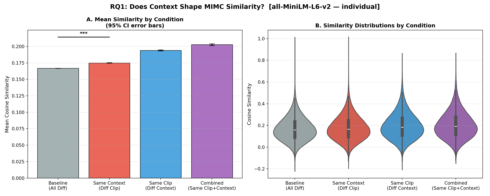
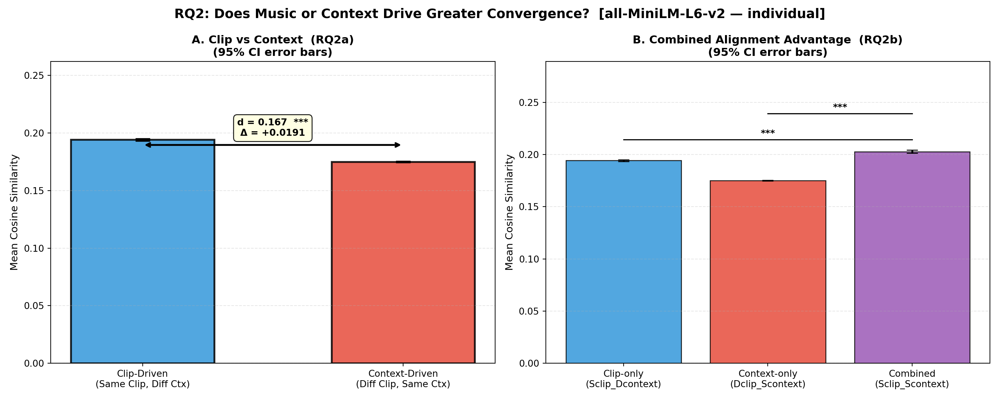
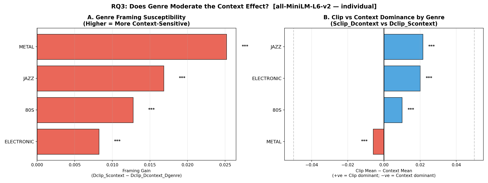
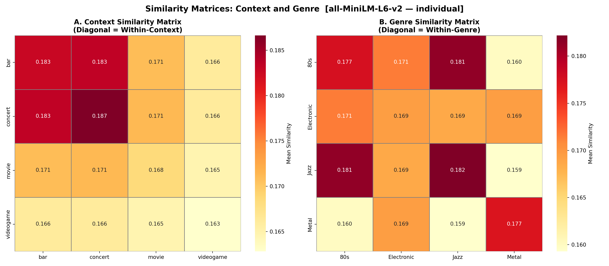
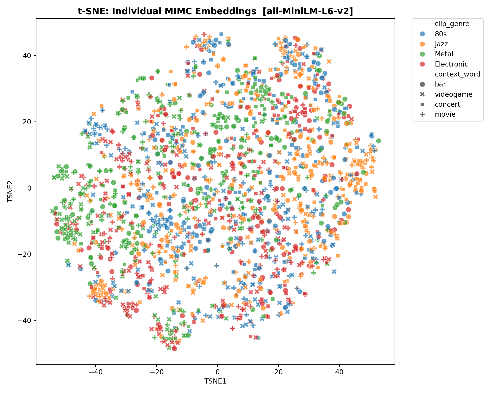

<!DOCTYPE html>
<html xmlns="http://www.w3.org/1999/xhtml" lang="en" xml:lang="en"><head>

<meta charset="utf-8">
<meta name="generator" content="quarto-1.9.36">

<meta name="viewport" content="width=device-width, initial-scale=1.0, user-scalable=yes">

<meta name="author" content="Hazel A. van der Walle (PhD student, Music, Durham University)">
<meta name="dcterms.date" content="2026-04-23">

<title>Framed Listening: Sentence Embedding Analyses (individual MIMC level)</title>
<style>
/* Default styles provided by pandoc.
** See https://pandoc.org/MANUAL.html#variables-for-html for config info.
*/
code{white-space: pre-wrap;}
span.smallcaps{font-variant: small-caps;}
div.columns{display: flex; gap: min(4vw, 1.5em);}
div.column{flex: auto; overflow-x: auto;}
div.hanging-indent{margin-left: 1.5em; text-indent: -1.5em;}
ul.task-list{list-style: none;}
ul.task-list li input[type="checkbox"] {
  width: 0.8em;
  margin: 0 0.8em 0.2em -1em; /* quarto-specific, see https://github.com/quarto-dev/quarto-cli/issues/4556 */ 
  vertical-align: middle;
}
/* CSS for syntax highlighting */
html { -webkit-text-size-adjust: 100%; }
pre > code.sourceCode { white-space: pre; position: relative; }
pre > code.sourceCode > span { display: inline-block; line-height: 1.25; }
pre > code.sourceCode > span:empty { height: 1.2em; }
.sourceCode { overflow: visible; }
code.sourceCode > span { color: inherit; text-decoration: inherit; }
div.sourceCode { margin: 1em 0; }
pre.sourceCode { margin: 0; }
@media screen {
div.sourceCode { overflow: auto; }
}
@media print {
pre > code.sourceCode { white-space: pre-wrap; }
pre > code.sourceCode > span { text-indent: -5em; padding-left: 5em; }
}
pre.numberSource code
  { counter-reset: source-line 0; }
pre.numberSource code > span
  { position: relative; left: -4em; counter-increment: source-line; }
pre.numberSource code > span > a:first-child::before
  { content: counter(source-line);
    position: relative; left: -1em; text-align: right; vertical-align: baseline;
    border: none; display: inline-block;
    -webkit-touch-callout: none; -webkit-user-select: none;
    -khtml-user-select: none; -moz-user-select: none;
    -ms-user-select: none; user-select: none;
    padding: 0 4px; width: 4em;
  }
pre.numberSource { margin-left: 3em;  padding-left: 4px; }
div.sourceCode
  {   }
@media screen {
pre > code.sourceCode > span > a:first-child::before { text-decoration: underline; }
}
</style>


<script src="SEmb-analysis_files/libs/clipboard/clipboard.min.js"></script>
<script src="SEmb-analysis_files/libs/quarto-html/quarto.js" type="module"></script>
<script src="SEmb-analysis_files/libs/quarto-html/tabsets/tabsets.js" type="module"></script>
<script src="SEmb-analysis_files/libs/quarto-html/popper.min.js"></script>
<script src="SEmb-analysis_files/libs/quarto-html/tippy.umd.min.js"></script>
<script src="SEmb-analysis_files/libs/quarto-html/anchor.min.js"></script>
<link href="SEmb-analysis_files/libs/quarto-html/tippy.css" rel="stylesheet">
<link href="SEmb-analysis_files/libs/quarto-html/quarto-syntax-highlighting-845c23b38eaddc0f92fda52bfe77a8c8.css" rel="stylesheet" id="quarto-text-highlighting-styles">
<script src="SEmb-analysis_files/libs/bootstrap/bootstrap.min.js"></script>
<link href="SEmb-analysis_files/libs/bootstrap/bootstrap-icons.css" rel="stylesheet">
<link href="SEmb-analysis_files/libs/bootstrap/bootstrap-8ffd5f67044e5306d9846f29df41dda5.min.css" rel="stylesheet" append-hash="true" id="quarto-bootstrap" data-mode="light">


</head>

<body class="quarto-light">

<div id="quarto-content" class="page-columns page-rows-contents page-layout-article">
<div id="quarto-margin-sidebar" class="sidebar margin-sidebar">
  <nav id="TOC" role="doc-toc" class="toc-active">
    <h2 id="toc-title">Table of contents</h2>
   
  <ul>
  <li><a href="#setup" id="toc-setup" class="nav-link active" data-scroll-target="#setup">Setup</a></li>
  <li><a href="#helper-functions" id="toc-helper-functions" class="nav-link" data-scroll-target="#helper-functions">Helper Functions</a></li>
  <li><a href="#data-preparation" id="toc-data-preparation" class="nav-link" data-scroll-target="#data-preparation">Data Preparation</a>
  <ul class="collapse">
  <li><a href="#load-data" id="toc-load-data" class="nav-link" data-scroll-target="#load-data">Load Data</a></li>
  <li><a href="#sentence-embeddings" id="toc-sentence-embeddings" class="nav-link" data-scroll-target="#sentence-embeddings">Sentence Embeddings</a></li>
  <li><a href="#pairwise-similarity-by-condition" id="toc-pairwise-similarity-by-condition" class="nav-link" data-scroll-target="#pairwise-similarity-by-condition">Pairwise Similarity by Condition</a></li>
  </ul></li>
  <li><a href="#rq1-does-context-shape-mimc-similarity" id="toc-rq1-does-context-shape-mimc-similarity" class="nav-link" data-scroll-target="#rq1-does-context-shape-mimc-similarity">RQ1 — Does Context Shape MIMC Similarity?</a>
  <ul class="collapse">
  <li><a href="#omnibus-test" id="toc-omnibus-test" class="nav-link" data-scroll-target="#omnibus-test">Omnibus Test</a></li>
  <li><a href="#context-effect-dclip_scontext-vs-dclip_dcontext_dgenre" id="toc-context-effect-dclip_scontext-vs-dclip_dcontext_dgenre" class="nav-link" data-scroll-target="#context-effect-dclip_scontext-vs-dclip_dcontext_dgenre">Context Effect: Dclip_Scontext vs Dclip_Dcontext_Dgenre</a></li>
  <li><a href="#visualisation" id="toc-visualisation" class="nav-link" data-scroll-target="#visualisation">Visualisation</a></li>
  </ul></li>
  <li><a href="#rq2-music-or-context-which-drives-greater-convergence" id="toc-rq2-music-or-context-which-drives-greater-convergence" class="nav-link" data-scroll-target="#rq2-music-or-context-which-drives-greater-convergence">RQ2 — Music or Context: Which Drives Greater Convergence?</a>
  <ul class="collapse">
  <li><a href="#clip-vs-context" id="toc-clip-vs-context" class="nav-link" data-scroll-target="#clip-vs-context">Clip vs Context</a></li>
  <li><a href="#rq2b-combined-advantage-sclip_scontext-vs-single-factor-conditions" id="toc-rq2b-combined-advantage-sclip_scontext-vs-single-factor-conditions" class="nav-link" data-scroll-target="#rq2b-combined-advantage-sclip_scontext-vs-single-factor-conditions">RQ2b — Combined Advantage: Sclip_Scontext vs Single-Factor Conditions</a></li>
  <li><a href="#visualisation-1" id="toc-visualisation-1" class="nav-link" data-scroll-target="#visualisation-1">Visualisation</a></li>
  </ul></li>
  <li><a href="#rq3-does-genre-moderate-the-context-effect" id="toc-rq3-does-genre-moderate-the-context-effect" class="nav-link" data-scroll-target="#rq3-does-genre-moderate-the-context-effect">RQ3 — Does Genre Moderate the Context Effect?</a>
  <ul class="collapse">
  <li><a href="#framing-susceptibility-by-genre" id="toc-framing-susceptibility-by-genre" class="nav-link" data-scroll-target="#framing-susceptibility-by-genre">Framing Susceptibility by Genre</a></li>
  <li><a href="#within-genre-clip-vs-context-dominance" id="toc-within-genre-clip-vs-context-dominance" class="nav-link" data-scroll-target="#within-genre-clip-vs-context-dominance">Within-Genre Clip vs Context Dominance</a></li>
  <li><a href="#visualisation-2" id="toc-visualisation-2" class="nav-link" data-scroll-target="#visualisation-2">Visualisation</a></li>
  </ul></li>
  <li><a href="#summary" id="toc-summary" class="nav-link" data-scroll-target="#summary">Summary</a></li>
  <li><a href="#exploratory-analyses" id="toc-exploratory-analyses" class="nav-link" data-scroll-target="#exploratory-analyses">Exploratory Analyses</a>
  <ul class="collapse">
  <li><a href="#pairwise-context-and-genre-comparisons" id="toc-pairwise-context-and-genre-comparisons" class="nav-link" data-scroll-target="#pairwise-context-and-genre-comparisons">Pairwise Context and Genre Comparisons</a></li>
  <li><a href="#similarity-matrices" id="toc-similarity-matrices" class="nav-link" data-scroll-target="#similarity-matrices">Similarity Matrices</a></li>
  <li><a href="#individual-level-t-sne" id="toc-individual-level-t-sne" class="nav-link" data-scroll-target="#individual-level-t-sne">Individual-Level t-SNE</a></li>
  </ul></li>
  </ul>
</nav>
</div>
<main class="content" id="quarto-document-content">

<header id="title-block-header" class="quarto-title-block default">
<div class="quarto-title">
<h1 class="title">Framed Listening: Sentence Embedding Analyses (individual MIMC level)</h1>
</div>


<div class="quarto-title-meta">

    <div>
    <div class="quarto-title-meta-heading">Author</div>
    <div class="quarto-title-meta-contents">
             <p>Hazel A. van der Walle (PhD student, Music, Durham University) </p>
          </div>
  </div>
    
    <div>
    <div class="quarto-title-meta-heading">Published</div>
    <div class="quarto-title-meta-contents">
      <p class="date">April 23, 2026</p>
    </div>
  </div>
  
    
  </div>
  


</header>


<p>All datasets generated and used for this study are openly available on GitHub: <a href="https://github.com/HazelvdW/context-framed-listening" class="uri">https://github.com/HazelvdW/context-framed-listening</a>.</p>
<p>This document analyses <strong>semantic</strong> similarity between individual music-influenced mental content (MIMC) descriptions using sentence embeddings and cosine similarity. It is the third pipeline in the analysis chain and the only one where all five condition categories are fully available.</p>
<p><strong>Position in the analysis chain:</strong></p>
<table class="caption-top table">
<colgroup>
<col style="width: 20%">
<col style="width: 20%">
<col style="width: 20%">
<col style="width: 20%">
<col style="width: 20%">
</colgroup>
<thead>
<tr class="header">
<th>Document</th>
<th>Method</th>
<th>Level</th>
<th>N texts</th>
<th>RQ2b available?</th>
</tr>
</thead>
<tbody>
<tr class="odd">
<td><code>NLP-TFIDF-analysis.qmd</code></td>
<td>TF-IDF</td>
<td>combMIMC (aggregated)</td>
<td>64</td>
<td>No</td>
</tr>
<tr class="even">
<td><code>NLP-SEmb-analysis.qmd</code> <strong>(this doc)</strong></td>
<td><strong>Sentence embeddings</strong></td>
<td><strong>Individual MIMC</strong></td>
<td><strong>N per participant</strong></td>
<td><strong>Yes</strong></td>
</tr>
</tbody>
</table>
<p>At the individual level, each row is one participant’s MIMC description for one clip × context cell. This means <code>Sclip_Scontext</code> pairs (same clip, same context, different participants) now exist and are fully populated, enabling RQ2b (combined alignment advantage) to be tested for the first time in the pipeline.</p>
<p><strong>Model selection note</strong>: <code>all-MiniLM-L6-v2</code> is used as the default model. It was fine-tuned specifically for semantic similarity on diverse sentence-level text and performs strongly on short inputs (3–128 tokens), matching the short length of individual MIMC descriptions. The model name is set in a single config variable below and can be swapped without modifying any other code — see the model comparison note in the setup section for alternatives including mpnet.</p>
<p>Analyses mirror the combMIMC pipeline in structure, conditions, and research questions exactly.</p>
<hr>
<section id="setup" class="level2">
<h2 class="anchored" data-anchor-id="setup">Setup</h2>
<div class="cell">
<div class="cell-output cell-output-stdout">
<pre><code>Using virtual environment '/Users/hazelaileenvanderwalle/.virtualenvs/r-reticulate' ...</code></pre>
</div>
<div class="cell-output cell-output-stderr">
<pre><code>+ /Users/hazelaileenvanderwalle/.virtualenvs/r-reticulate/bin/python -m pip install --upgrade --no-user pandas numpy scipy scikit-learn matplotlib seaborn sentence-transformers torch</code></pre>
</div>
</div>
<div class="cell">
<div class="cell-output cell-output-stdout">
<pre><code>/Users/hazelaileenvanderwalle/.virtualenvs/r-reticulate/lib/python3.9/site-packages/urllib3/__init__.py:35: NotOpenSSLWarning: urllib3 v2 only supports OpenSSL 1.1.1+, currently the 'ssl' module is compiled with 'LibreSSL 2.8.3'. See: https://github.com/urllib3/urllib3/issues/3020
  warnings.warn(</code></pre>
</div>
<div class="cell-output cell-output-stdout">
<pre><code>Output directory: /Users/hazelaileenvanderwalle/Library/CloudStorage/OneDrive-Personal/work/study/PhD/_PROJECT/_framedListening_NLP/context-framed-listening/NLP_outputs/SentenceEmbedding</code></pre>
</div>
</div>
<div class="cell">
<div class="cell-output cell-output-stdout">
<pre><code>Python 3.9.6 (default, Jan  9 2026, 11:03:41) 
[Clang 17.0.0 (clang-1700.6.4.2)]</code></pre>
</div>
<div class="cell-output cell-output-stdout">
<pre><code>----------------------------------------------------</code></pre>
</div>
<div class="cell-output cell-output-stdout">
<pre><code>  numpy                      2.0.2        OK
  pandas                     2.3.3        OK
  scipy                      1.13.1       OK
  sklearn                    1.6.1        OK
  matplotlib                 3.9.4        OK
  seaborn                    0.13.2       OK
  sentence_transformers      5.1.2        OK
  torch                      2.8.0        OK</code></pre>
</div>
<div class="cell-output cell-output-stdout">
<pre><code>
All package versions OK.</code></pre>
</div>
</div>
<div class="cell">
<div class="cell-output cell-output-stdout">
<pre><code>Model:            sentence-transformers/all-MiniLM-L6-v2</code></pre>
</div>
<div class="cell-output cell-output-stdout">
<pre><code>Slug:             all-MiniLM-L6-v2</code></pre>
</div>
<div class="cell-output cell-output-stdout">
<pre><code>Max seq length:   128</code></pre>
</div>
<div class="cell-output cell-output-stdout">
<pre><code>Native ST model:  True</code></pre>
</div>
</div>
<hr>
</section>
<section id="helper-functions" class="level2">
<h2 class="anchored" data-anchor-id="helper-functions">Helper Functions</h2>
<div class="cell">
<div class="code-copy-outer-scaffold"><div class="sourceCode cell-code" id="cb13"><pre class="sourceCode python code-with-copy"><code class="sourceCode python"><span id="cb13-1"><a href="#cb13-1" aria-hidden="true" tabindex="-1"></a><span class="kw">def</span> sig_marker(p):</span>
<span id="cb13-2"><a href="#cb13-2" aria-hidden="true" tabindex="-1"></a>    <span class="co">"""Return significance marker string for a p-value."""</span></span>
<span id="cb13-3"><a href="#cb13-3" aria-hidden="true" tabindex="-1"></a>    <span class="cf">if</span> p <span class="op">&lt;</span> <span class="fl">0.001</span>: <span class="cf">return</span> <span class="st">"***"</span></span>
<span id="cb13-4"><a href="#cb13-4" aria-hidden="true" tabindex="-1"></a>    <span class="cf">if</span> p <span class="op">&lt;</span> <span class="fl">0.01</span>:  <span class="cf">return</span> <span class="st">"**"</span></span>
<span id="cb13-5"><a href="#cb13-5" aria-hidden="true" tabindex="-1"></a>    <span class="cf">if</span> p <span class="op">&lt;</span> <span class="fl">0.05</span>:  <span class="cf">return</span> <span class="st">"*"</span></span>
<span id="cb13-6"><a href="#cb13-6" aria-hidden="true" tabindex="-1"></a>    <span class="cf">return</span> <span class="st">"n.s."</span></span>
<span id="cb13-7"><a href="#cb13-7" aria-hidden="true" tabindex="-1"></a></span>
<span id="cb13-8"><a href="#cb13-8" aria-hidden="true" tabindex="-1"></a></span>
<span id="cb13-9"><a href="#cb13-9" aria-hidden="true" tabindex="-1"></a><span class="kw">def</span> welch_t(g1, g2):</span>
<span id="cb13-10"><a href="#cb13-10" aria-hidden="true" tabindex="-1"></a>    <span class="co">"""Welch's t-test with Welch-Satterthwaite degrees of freedom.</span></span>
<span id="cb13-11"><a href="#cb13-11" aria-hidden="true" tabindex="-1"></a><span class="co">    Returns (t, p, df)."""</span></span>
<span id="cb13-12"><a href="#cb13-12" aria-hidden="true" tabindex="-1"></a>    n1, n2 <span class="op">=</span> <span class="bu">len</span>(g1), <span class="bu">len</span>(g2)</span>
<span id="cb13-13"><a href="#cb13-13" aria-hidden="true" tabindex="-1"></a>    v1, v2 <span class="op">=</span> g1.var(ddof<span class="op">=</span><span class="dv">1</span>), g2.var(ddof<span class="op">=</span><span class="dv">1</span>)</span>
<span id="cb13-14"><a href="#cb13-14" aria-hidden="true" tabindex="-1"></a>    se     <span class="op">=</span> np.sqrt(v1<span class="op">/</span>n1 <span class="op">+</span> v2<span class="op">/</span>n2)</span>
<span id="cb13-15"><a href="#cb13-15" aria-hidden="true" tabindex="-1"></a>    t      <span class="op">=</span> (g1.mean() <span class="op">-</span> g2.mean()) <span class="op">/</span> se</span>
<span id="cb13-16"><a href="#cb13-16" aria-hidden="true" tabindex="-1"></a>    df     <span class="op">=</span> (v1<span class="op">/</span>n1 <span class="op">+</span> v2<span class="op">/</span>n2)<span class="op">**</span><span class="dv">2</span> <span class="op">/</span> ((v1<span class="op">/</span>n1)<span class="op">**</span><span class="dv">2</span><span class="op">/</span>(n1<span class="op">-</span><span class="dv">1</span>) <span class="op">+</span> (v2<span class="op">/</span>n2)<span class="op">**</span><span class="dv">2</span><span class="op">/</span>(n2<span class="op">-</span><span class="dv">1</span>))</span>
<span id="cb13-17"><a href="#cb13-17" aria-hidden="true" tabindex="-1"></a>    p      <span class="op">=</span> <span class="dv">2</span> <span class="op">*</span> (<span class="dv">1</span> <span class="op">-</span> stats.t.cdf(<span class="bu">abs</span>(t), df))</span>
<span id="cb13-18"><a href="#cb13-18" aria-hidden="true" tabindex="-1"></a>    <span class="cf">return</span> <span class="bu">float</span>(t), <span class="bu">float</span>(p), <span class="bu">float</span>(df)</span>
<span id="cb13-19"><a href="#cb13-19" aria-hidden="true" tabindex="-1"></a></span>
<span id="cb13-20"><a href="#cb13-20" aria-hidden="true" tabindex="-1"></a></span>
<span id="cb13-21"><a href="#cb13-21" aria-hidden="true" tabindex="-1"></a><span class="kw">def</span> cohens_d(g1, g2):</span>
<span id="cb13-22"><a href="#cb13-22" aria-hidden="true" tabindex="-1"></a>    <span class="co">"""Compute Cohen's d effect size."""</span></span>
<span id="cb13-23"><a href="#cb13-23" aria-hidden="true" tabindex="-1"></a>    pooled <span class="op">=</span> np.sqrt((g1.std()<span class="op">**</span><span class="dv">2</span> <span class="op">+</span> g2.std()<span class="op">**</span><span class="dv">2</span>) <span class="op">/</span> <span class="dv">2</span>)</span>
<span id="cb13-24"><a href="#cb13-24" aria-hidden="true" tabindex="-1"></a>    <span class="cf">return</span> <span class="bu">float</span>((g1.mean() <span class="op">-</span> g2.mean()) <span class="op">/</span> pooled) <span class="cf">if</span> pooled <span class="op">&gt;</span> <span class="dv">0</span> <span class="cf">else</span> np.nan</span></code></pre></div><button title="Copy to Clipboard" class="code-copy-button"><i class="bi"></i></button></div>
</div>
<hr>
</section>
<section id="data-preparation" class="level2">
<h2 class="anchored" data-anchor-id="data-preparation">Data Preparation</h2>
<section id="load-data" class="level3">
<h3 class="anchored" data-anchor-id="load-data">Load Data</h3>
<p>Load <strong><code>dataMIMC_preprocessed.csv</code></strong> — individual-level preprocessed MIMC descriptions, one row per participant × clip × context observation.</p>
<div class="cell">
<div class="cell-output cell-output-stdout">
<pre><code>Dropped 2 rows with missing textMIMC_lvl1a</code></pre>
</div>
<div class="cell-output cell-output-stdout">
<pre><code>Shape:   (1960, 33)</code></pre>
</div>
<div class="cell-output cell-output-stdout">
<pre><code>Columns: ['Unnamed: 0', 'clip_name', 'clip_genre', 'context_word', 'clip_context_PAIR', 'expName', 'PROLIFIC_PID', 'File_ID', 'date', 'descr_THOUGHT.text', 'rating_music_prompted.response', 'rating_spontaneity.response', 'rating_novelty.response', 'rating_familiarity.response', 'rating_enjoyment.response', 'demographics.headphones', 'demographics.age', 'demographics.gender', 'demographics.livingCountry', 'demographics.birthCountry', 'demographics.nativeLanguage', 'demographics.otherLanguage', 'demographics.otherLanguageText', 'demographics.hearingImpariments', 'demographics.hearingImpairmentsText', 'demographics.education', 'demographics.musicianIdentification', 'demographics.feedback', 'descr_THOUGHT.text_spellchecked', 'textMIMC_lvl1a', 'textMIMC_lvl1b', 'textMIMC_lvl2a', 'textMIMC_lvl2b']</code></pre>
</div>
<div class="cell-output cell-output-stdout">
<pre><code>
Unique clips:    ['80s_LOW_02', '80s_LOW_06', '80s_MED_08', '80s_MED_13', 'Ele_LOW_09', 'Ele_LOW_14', 'Ele_MED_19', 'Ele_MED_20', 'Jaz_LOW_19', 'Jaz_LOW_21', 'Jaz_MED_02', 'Jaz_MED_07', 'Met_LOW_09', 'Met_LOW_14', 'Met_MED_19', 'Met_MED_20']</code></pre>
</div>
<div class="cell-output cell-output-stdout">
<pre><code>Unique contexts: ['bar', 'concert', 'movie', 'videogame']</code></pre>
</div>
<div class="cell-output cell-output-stdout">
<pre><code>Unique genres:   ['80s', 'Electronic', 'Jazz', 'Metal']</code></pre>
</div>
<div class="cell-output cell-output-stdout">
<pre><code>
Total individual MIMC responses: 1960</code></pre>
</div>
<div class="cell-output cell-output-stdout">
<pre><code>
Text length (words):</code></pre>
</div>
<div class="cell-output cell-output-stdout">
<pre><code>  Min:    1</code></pre>
</div>
<div class="cell-output cell-output-stdout">
<pre><code>  Median: 17</code></pre>
</div>
<div class="cell-output cell-output-stdout">
<pre><code>  Mean:   20.1</code></pre>
</div>
<div class="cell-output cell-output-stdout">
<pre><code>  Max:    100</code></pre>
</div>
<div class="cell-output cell-output-stdout">
<pre><code>  Texts &gt; 128 tokens (approx): 1  (word count is a rough proxy for token count)</code></pre>
</div>
<div class="cell-output cell-output-stdout">
<pre><code>   Unnamed: 0  ... text_len_words
0           0  ...             10
1           1  ...             33
2           2  ...              8
3           3  ...             14

[4 rows x 34 columns]</code></pre>
</div>
</div>
</section>
<section id="sentence-embeddings" class="level3">
<h3 class="anchored" data-anchor-id="sentence-embeddings">Sentence Embeddings</h3>
<p>Encode each individual MIMC description using the configured model. Embeddings are cached to disk keyed to the model slug so re-runs skip encoding entirely, and switching models automatically triggers a fresh encode.</p>
<div class="cell">
<div class="cell-output cell-output-stdout">
<pre><code>Loaded cached embeddings: (1960, 384)  (all-MiniLM-L6-v2)</code></pre>
</div>
<div class="cell-output cell-output-stdout">
<pre><code>
Embedding matrix: 1960 texts × 384 dims</code></pre>
</div>
<div class="cell-output cell-output-stdout">
<pre><code>L2 norms (should be ~1.0): min=1.0000  max=1.0000</code></pre>
</div>
</div>
</section>
<section id="pairwise-similarity-by-condition" class="level3">
<h3 class="anchored" data-anchor-id="pairwise-similarity-by-condition">Pairwise Similarity by Condition</h3>
<p>At the individual level the full N×N pairwise matrix is too large to hold in memory if N is large. Similarities are instead computed in batches and written directly to the condition records, avoiding materialising the full matrix.</p>
<p>Each pair is annotated with the same five condition labels as the combMIMC pipeline. Because participants contribute one response per cell, <code>Sclip_Scontext</code> pairs now exist: two different participants who heard the same clip under the same context label.</p>
<blockquote class="blockquote">
<p><strong>Note on non-independence</strong>: pairs at the individual level are not independent — each participant’s response appears in multiple pairs. This is the same structure as the combMIMC pairwise comparisons and is standard in semantic similarity research of this kind. Welch’s t-tests are used as in the combMIMC pipeline; the pair is the unit of analysis.</p>
</blockquote>
<table class="caption-top table">
<colgroup>
<col style="width: 50%">
<col style="width: 50%">
</colgroup>
<thead>
<tr class="header">
<th>Condition</th>
<th>Description</th>
</tr>
</thead>
<tbody>
<tr class="odd">
<td><code>Sclip_Scontext</code></td>
<td>Same clip, same context — <strong>different participants</strong> — combined alignment</td>
</tr>
<tr class="even">
<td><code>Sclip_Dcontext</code></td>
<td>Same clip, different context — isolates <strong>clip</strong> influence</td>
</tr>
<tr class="odd">
<td><code>Dclip_Scontext</code></td>
<td>Different clip, same context — isolates <strong>context</strong> influence</td>
</tr>
<tr class="even">
<td><code>Dclip_Dcontext_Sgenre</code></td>
<td>Both different, same genre</td>
</tr>
<tr class="odd">
<td><code>Dclip_Dcontext_Dgenre</code></td>
<td>Entirely different — dissimilarity baseline</td>
</tr>
</tbody>
</table>
<div class="cell">
<div class="cell-output cell-output-stdout">
<pre><code>Total unique pairs: 1,919,820</code></pre>
</div>
<div class="cell-output cell-output-stdout">
<pre><code>
Condition distribution:</code></pre>
</div>
<div class="cell-output cell-output-stdout">
<pre><code>condition
Dclip_Dcontext_Dgenre    1080315
Dclip_Dcontext_Sgenre     269955
Dclip_Scontext            449959
Sclip_Dcontext             90271
Sclip_Scontext             29320</code></pre>
</div>
<div class="cell-output cell-output-stdout">
<pre><code>
Saved similarity data</code></pre>
</div>
</div>
<hr>
</section>
</section>
<section id="rq1-does-context-shape-mimc-similarity" class="level2">
<h2 class="anchored" data-anchor-id="rq1-does-context-shape-mimc-similarity">RQ1 — Does Context Shape MIMC Similarity?</h2>
<p><strong>Logic</strong>: Compare <code>Dclip_Scontext</code> (different music, same context label) against <code>Dclip_Dcontext_Dgenre</code> (everything different — the dissimilarity floor). If context drives convergence, pairs sharing a context label should be more similar than pairs sharing nothing.</p>
<section id="omnibus-test" class="level3">
<h3 class="anchored" data-anchor-id="omnibus-test">Omnibus Test</h3>
<div class="cell">
<div class="cell-output cell-output-stdout">
<pre><code>OMNIBUS KRUSKAL–WALLIS TEST ACROSS ALL CONDITIONS</code></pre>
</div>
<div class="cell-output cell-output-stdout">
<pre><code>============================================================</code></pre>
</div>
<div class="cell-output cell-output-stdout">
<pre><code>  H(4) = 7468.197,  p = 0.0000e+00  ***</code></pre>
</div>
<div class="cell-output cell-output-stdout">
<pre><code>  Conditions tested: ['Sclip_Scontext', 'Sclip_Dcontext', 'Dclip_Scontext', 'Dclip_Dcontext_Sgenre', 'Dclip_Dcontext_Dgenre']</code></pre>
</div>
<div class="cell-output cell-output-stdout">
<pre><code>
Post-hoc pairwise Mann–Whitney U  (Bonferroni corrected)</code></pre>
</div>
<div class="cell-output cell-output-stdout">
<pre><code>------------------------------------------------------------</code></pre>
</div>
<div class="cell-output cell-output-stdout">
<pre><code>                cond1                 cond2    mean1    mean2         d             p        p_bonf sig_bonf
       Sclip_Scontext Dclip_Dcontext_Dgenre 0.202735 0.166804  0.313912  0.000000e+00  0.000000e+00      ***
       Sclip_Dcontext Dclip_Dcontext_Dgenre 0.194144 0.166804  0.241741  0.000000e+00  0.000000e+00      ***
       Sclip_Scontext        Dclip_Scontext 0.202735 0.174996  0.238662 1.664619e-298 1.664619e-297      ***
       Sclip_Scontext Dclip_Dcontext_Sgenre 0.202735 0.176702  0.224152 4.852642e-250 4.852642e-249      ***
       Sclip_Dcontext        Dclip_Scontext 0.194144 0.174996  0.166675  0.000000e+00  0.000000e+00      ***
       Sclip_Dcontext Dclip_Dcontext_Sgenre 0.194144 0.176702  0.151940 3.921396e-284 3.921396e-283      ***
Dclip_Dcontext_Sgenre Dclip_Dcontext_Dgenre 0.176702 0.166804  0.090943  0.000000e+00  0.000000e+00      ***
       Dclip_Scontext Dclip_Dcontext_Dgenre 0.174996 0.166804  0.075195  0.000000e+00  0.000000e+00      ***
       Sclip_Scontext        Sclip_Dcontext 0.202735 0.194144  0.071514  1.285090e-24  1.285090e-23      ***
       Dclip_Scontext Dclip_Dcontext_Sgenre 0.174996 0.176702 -0.015418  2.645436e-11  2.645436e-10      ***</code></pre>
</div>
<div class="cell-output cell-output-stdout">
<pre><code>
Saved omnibus post-hoc table</code></pre>
</div>
</div>
</section>
<section id="context-effect-dclip_scontext-vs-dclip_dcontext_dgenre" class="level3">
<h3 class="anchored" data-anchor-id="context-effect-dclip_scontext-vs-dclip_dcontext_dgenre">Context Effect: Dclip_Scontext vs Dclip_Dcontext_Dgenre</h3>
<div class="cell">
<div class="cell-output cell-output-stdout">
<pre><code>RQ1 — CONTEXT EFFECT</code></pre>
</div>
<div class="cell-output cell-output-stdout">
<pre><code>============================================================</code></pre>
</div>
<div class="cell-output cell-output-stdout">
<pre><code>  Dclip_Scontext         M = 0.1750  (N = 449,959)</code></pre>
</div>
<div class="cell-output cell-output-stdout">
<pre><code>  Dclip_Dcontext_Dgenre  M = 0.1668  (N = 1,080,315)</code></pre>
</div>
<div class="cell-output cell-output-stdout">
<pre><code>  Delta = +0.0082</code></pre>
</div>
<div class="cell-output cell-output-stdout">
<pre><code>  Welch's t(816498.7) = 42.084,  p = 0.0000  ***</code></pre>
</div>
<div class="cell-output cell-output-stdout">
<pre><code>  Cohen's d = 0.075</code></pre>
</div>
</div>
</section>
<section id="visualisation" class="level3">
<h3 class="anchored" data-anchor-id="visualisation">Visualisation</h3>
<div class="cell">
<div class="cell-output-display">
<div>
<figure class="figure">
<p></p>
</figure>
</div>
</div>
</div>
<hr>
</section>
</section>
<section id="rq2-music-or-context-which-drives-greater-convergence" class="level2">
<h2 class="anchored" data-anchor-id="rq2-music-or-context-which-drives-greater-convergence">RQ2 — Music or Context: Which Drives Greater Convergence?</h2>
<p><strong>Logic</strong>: <code>Sclip_Dcontext</code> (same clip, different contexts) isolates the music contribution; <code>Dclip_Scontext</code> (different clips, same context) isolates the context contribution. RQ2b tests whether aligning both factors (<code>Sclip_Scontext</code>) produces additional convergence beyond either alone — <strong>this is the first pipeline in the chain where this test is available</strong>, as individual-level data provides within-cell pairs across different participants.</p>
<section id="clip-vs-context" class="level3">
<h3 class="anchored" data-anchor-id="clip-vs-context">Clip vs Context</h3>
<div class="cell">
<div class="cell-output cell-output-stdout">
<pre><code>RQ2a — CLIP vs CONTEXT</code></pre>
</div>
<div class="cell-output cell-output-stdout">
<pre><code>============================================================</code></pre>
</div>
<div class="cell-output cell-output-stdout">
<pre><code>  Sclip_Dcontext (clip-driven):    M = 0.1941  (N = 90,271)</code></pre>
</div>
<div class="cell-output cell-output-stdout">
<pre><code>  Dclip_Scontext (context-driven): M = 0.1750  (N = 449,959)</code></pre>
</div>
<div class="cell-output cell-output-stdout">
<pre><code>  Delta (clip − context): +0.0191</code></pre>
</div>
<div class="cell-output cell-output-stdout">
<pre><code>  Welch's t(123744.7) = 44.674,  p = 0.0000  ***</code></pre>
</div>
<div class="cell-output cell-output-stdout">
<pre><code>  Cohen's d = 0.167</code></pre>
</div>
<div class="cell-output cell-output-stdout">
<pre><code>
-&gt; CLIP drives greater MIMC similarity at the individual level</code></pre>
</div>
</div>
</section>
<section id="rq2b-combined-advantage-sclip_scontext-vs-single-factor-conditions" class="level3">
<h3 class="anchored" data-anchor-id="rq2b-combined-advantage-sclip_scontext-vs-single-factor-conditions">RQ2b — Combined Advantage: Sclip_Scontext vs Single-Factor Conditions</h3>
<div class="cell">
<div class="cell-output cell-output-stdout">
<pre><code>RQ2b — COMBINED ALIGNMENT ADVANTAGE</code></pre>
</div>
<div class="cell-output cell-output-stdout">
<pre><code>=================================================================</code></pre>
</div>
<div class="cell-output cell-output-stdout">
<pre><code>  Sclip_Scontext  M=0.2027  SD=0.1214  N=29,320</code></pre>
</div>
<div class="cell-output cell-output-stdout">
<pre><code>  Sclip_Dcontext  M=0.1941  SD=0.1188  N=90,271</code></pre>
</div>
<div class="cell-output cell-output-stdout">
<pre><code>  Dclip_Scontext  M=0.1750  SD=0.1108  N=449,959</code></pre>
</div>
<div class="cell-output cell-output-stdout">
<pre><code>
Welch's t-tests  (Bonferroni k=2,  alpha_adj=0.0250)</code></pre>
</div>
<div class="cell-output cell-output-stdout">
<pre><code>-----------------------------------------------------------------</code></pre>
</div>
<div class="cell-output cell-output-stdout">
<pre><code>
  Combined advantage over Clip-only
    Delta = +0.0086  Welch's t(48862.4) = 10.581  p = 0.0000 ***  -&gt;  p_bonf = 0.0000 ***  d = 0.072

  Combined advantage over Context-only
    Delta = +0.0277  Welch's t(32580.2) = 38.099  p = 0.0000 ***  -&gt;  p_bonf = 0.0000 ***  d = 0.239</code></pre>
</div>
<div class="cell-output cell-output-stdout">
<pre><code>
Saved combined advantage table</code></pre>
</div>
</div>
</section>
<section id="visualisation-1" class="level3">
<h3 class="anchored" data-anchor-id="visualisation-1">Visualisation</h3>
<div class="cell">
<div class="cell-output cell-output-stdout">
<pre><code>(0.0, 0.2620939288332975)</code></pre>
</div>
<div class="cell-output cell-output-stdout">
<pre><code>[&lt;matplotlib.lines.Line2D object at 0x304de4af0&gt;]
Text(1, 0.21712474232709922, '***')
[&lt;matplotlib.lines.Line2D object at 0x304de4f10&gt;]
Text(1.5, 0.2421247423270992, '***')
(0.0, 0.2891247423270992)</code></pre>
</div>
<div class="cell-output-display">
<div>
<figure class="figure">
<p></p>
</figure>
</div>
</div>
</div>
<hr>
</section>
</section>
<section id="rq3-does-genre-moderate-the-context-effect" class="level2">
<h2 class="anchored" data-anchor-id="rq3-does-genre-moderate-the-context-effect">RQ3 — Does Genre Moderate the Context Effect?</h2>
<p><strong>Logic</strong>: Two complementary tests. <em>Framing susceptibility</em>: per genre, how much does sharing a context label raise similarity above the dissimilarity floor? <em>Within-genre clip vs context dominance</em>: within each genre, does clip or context drive more convergence?</p>
<section id="framing-susceptibility-by-genre" class="level3">
<h3 class="anchored" data-anchor-id="framing-susceptibility-by-genre">Framing Susceptibility by Genre</h3>
<div class="cell">
<div class="cell-output cell-output-stdout">
<pre><code>RQ3 — GENRE FRAMING SUSCEPTIBILITY</code></pre>
</div>
<div class="cell-output cell-output-stdout">
<pre><code>======================================================================</code></pre>
</div>
<div class="cell-output cell-output-stdout">
<pre><code>Framing gain = Dclip_Scontext M  −  Dclip_Dcontext_Dgenre M  (per genre)</code></pre>
</div>
<div class="cell-output cell-output-stdout">
<pre><code>----------------------------------------------------------------------</code></pre>
</div>
<div class="cell-output cell-output-stdout">
<pre><code>  80S             Ctx M=0.1839  Base M=0.1711  Gain=+0.0128  d=0.114  p=0.0000
  ELECTRONIC      Ctx M=0.1758  Base M=0.1676  Gain=+0.0082  d=0.074  p=0.0000
  JAZZ            Ctx M=0.1848  Base M=0.1680  Gain=+0.0168  d=0.154  p=0.0000
  METAL           Ctx M=0.1855  Base M=0.1603  Gain=+0.0252  d=0.235  p=0.0000</code></pre>
</div>
<div class="cell-output cell-output-stdout">
<pre><code>
Genres ranked by framing susceptibility (highest to lowest):
  METAL           Gain=+0.0252  d=0.235  sig_bonf=***
  JAZZ            Gain=+0.0168  d=0.154  sig_bonf=***
  80S             Gain=+0.0128  d=0.114  sig_bonf=***
  ELECTRONIC      Gain=+0.0082  d=0.074  sig_bonf=***

Saved genre framing susceptibility table</code></pre>
</div>
</div>
</section>
<section id="within-genre-clip-vs-context-dominance" class="level3">
<h3 class="anchored" data-anchor-id="within-genre-clip-vs-context-dominance">Within-Genre Clip vs Context Dominance</h3>
<div class="cell">
<div class="cell-output cell-output-stdout">
<pre><code>RQ3 — WITHIN-GENRE CLIP vs CONTEXT DOMINANCE</code></pre>
</div>
<div class="cell-output cell-output-stdout">
<pre><code>======================================================================</code></pre>
</div>
<div class="cell-output cell-output-stdout">
<pre><code>Clip-driven:    Sclip_Dcontext  (same clip, diff context, same genre)</code></pre>
</div>
<div class="cell-output cell-output-stdout">
<pre><code>Context-driven: Dclip_Scontext  (diff clip, same context, same genre)</code></pre>
</div>
<div class="cell-output cell-output-stdout">
<pre><code>----------------------------------------------------------------------</code></pre>
</div>
<div class="cell-output cell-output-stdout">
<pre><code>  80S             Clip M=0.1939  Ctx M=0.1839  -&gt; CLIP    dominant  d=0.085  p=0.0000
  ELECTRONIC      Clip M=0.1958  Ctx M=0.1758  -&gt; CLIP    dominant  d=0.168  p=0.0000
  JAZZ            Clip M=0.2063  Ctx M=0.1848  -&gt; CLIP    dominant  d=0.186  p=0.0000
  METAL           Clip M=0.1795  Ctx M=0.1855  -&gt; CONTEXT dominant  d=-0.054  p=0.0000</code></pre>
</div>
<div class="cell-output cell-output-stdout">
<pre><code>
Saved within-genre clip vs context moderator table</code></pre>
</div>
</div>
</section>
<section id="visualisation-2" class="level3">
<h3 class="anchored" data-anchor-id="visualisation-2">Visualisation</h3>
<div class="cell">
<div class="cell-output cell-output-stdout">
<pre><code>&lt;BarContainer object of 4 artists&gt;
&lt;matplotlib.lines.Line2D object at 0x304ef0370&gt;
[&lt;matplotlib.axis.YTick object at 0x304e7dd30&gt;, &lt;matplotlib.axis.YTick object at 0x304e7dc40&gt;, &lt;matplotlib.axis.YTick object at 0x304e7e7c0&gt;, &lt;matplotlib.axis.YTick object at 0x304eff610&gt;]
[Text(0, 0, 'ELECTRONIC'), Text(0, 1, '80S'), Text(0, 2, 'JAZZ'), Text(0, 3, 'METAL')]
Text(0.5, 0, 'Framing Gain\n(Dclip_Scontext − Dclip_Dcontext_Dgenre)')
Text(0.5, 1.0, 'A. Genre Framing Susceptibility\n(Higher = More Context-Sensitive)')
Text(0.01022796389066005, 0, '***')
Text(0.014774078651812515, 1, '***')
Text(0.018849978190313865, 2, '***')
Text(0.02719670268517116, 3, '***')
&lt;BarContainer object of 4 artists&gt;
&lt;matplotlib.lines.Line2D object at 0x304f03cd0&gt;
&lt;matplotlib.lines.Line2D object at 0x304f109d0&gt;
&lt;matplotlib.lines.Line2D object at 0x304f10c70&gt;
[&lt;matplotlib.axis.YTick object at 0x304eca100&gt;, &lt;matplotlib.axis.YTick object at 0x304ec2a60&gt;, &lt;matplotlib.axis.YTick object at 0x304eb8f10&gt;, &lt;matplotlib.axis.YTick object at 0x304f229d0&gt;]
[Text(0, 0, 'METAL'), Text(0, 1, '80S'), Text(0, 2, 'ELECTRONIC'), Text(0, 3, 'JAZZ')]
Text(0.5, 0, 'Clip Mean − Context Mean\n(+ve = Clip dominant; −ve = Context dominant)')
Text(0.5, 1.0, 'B. Clip vs Context Dominance by Genre\n(Sclip_Dcontext vs Dclip_Scontext)')
Text(-0.008969781397134165, 0, '***')
Text(0.01303867316551582, 1, '***')
Text(0.023025473377718233, 2, '***')
Text(0.02447749307625743, 3, '***')
&lt;matplotlib.legend.Legend object at 0x304f321f0&gt;
Text(0.5, 0.98, 'RQ3: Does Genre Moderate the Context Effect?  [all-MiniLM-L6-v2 — individual]')
Saved: RQ3 genre moderation plot</code></pre>
</div>
<div class="cell-output-display">
<div>
<figure class="figure">
<p></p>
</figure>
</div>
</div>
</div>
<hr>
</section>
</section>
<section id="summary" class="level2">
<h2 class="anchored" data-anchor-id="summary">Summary</h2>
<div class="cell">
<div class="cell-output cell-output-stdout">
<pre><code>SUMMARY OF FINDINGS  [all-MiniLM-L6-v2 — individual level]</code></pre>
</div>
<div class="cell-output cell-output-stdout">
<pre><code>======================================================================</code></pre>
</div>
<div class="cell-output cell-output-stdout">
<pre><code>
RQ1 — Context Effect (Dclip_Scontext vs Dclip_Dcontext_Dgenre):</code></pre>
</div>
<div class="cell-output cell-output-stdout">
<pre><code>  Context-driven M=0.1750  |  Baseline M=0.1668</code></pre>
</div>
<div class="cell-output cell-output-stdout">
<pre><code>  Delta=+0.0082  t(816498.7)=42.084  p=0.0000  ***  d=0.075</code></pre>
</div>
<div class="cell-output cell-output-stdout">
<pre><code>
RQ2a — Clip vs Context (Sclip_Dcontext vs Dclip_Scontext):</code></pre>
</div>
<div class="cell-output cell-output-stdout">
<pre><code>  Clip M=0.1941  |  Ctx M=0.1750</code></pre>
</div>
<div class="cell-output cell-output-stdout">
<pre><code>  Delta=+0.0191  CLIP dominant  d=0.167  ***</code></pre>
</div>
<div class="cell-output cell-output-stdout">
<pre><code>
RQ2b — Combined Advantage (Sclip_Scontext vs single-factor conditions):</code></pre>
</div>
<div class="cell-output cell-output-stdout">
<pre><code>  Combined advantage over Clip-only
    Delta=+0.0086  d=0.072  sig_bonf=***
  Combined advantage over Context-only
    Delta=+0.0277  d=0.239  sig_bonf=***</code></pre>
</div>
<div class="cell-output cell-output-stdout">
<pre><code>
RQ3 — Genre Framing Susceptibility (ranked highest to lowest):
  METAL           Gain=+0.0252  d=0.235  sig_bonf=***
  JAZZ            Gain=+0.0168  d=0.154  sig_bonf=***
  80S             Gain=+0.0128  d=0.114  sig_bonf=***
  ELECTRONIC      Gain=+0.0082  d=0.074  sig_bonf=***</code></pre>
</div>
<div class="cell-output cell-output-stdout">
<pre><code>
RQ3 — Within-Genre Clip vs Context Dominance:
  80S             -&gt; CLIP    dominant  d=0.085  sig_bonf=***
  ELECTRONIC      -&gt; CLIP    dominant  d=0.168  sig_bonf=***
  JAZZ            -&gt; CLIP    dominant  d=0.186  sig_bonf=***
  METAL           -&gt; CONTEXT dominant  d=-0.054  sig_bonf=***</code></pre>
</div>
</div>
<hr>
</section>
<section id="exploratory-analyses" class="level2">
<h2 class="anchored" data-anchor-id="exploratory-analyses">Exploratory Analyses</h2>
<blockquote class="blockquote">
<p>The analyses below do not map directly onto the three pre-specified research questions. They are retained as descriptive and methodological supplements that may be useful for characterising the data or for future exploratory work.</p>
</blockquote>
<section id="pairwise-context-and-genre-comparisons" class="level3">
<h3 class="anchored" data-anchor-id="pairwise-context-and-genre-comparisons">Pairwise Context and Genre Comparisons</h3>
<p>Tests whether specific context labels or genres differ from each other in how much convergence they produce. Descriptive characterisation only.</p>
<div class="cell">
<div class="cell-output cell-output-stdout">
<pre><code>PAIRWISE CONTEXT COMPARISONS  (Bonferroni corrected)</code></pre>
</div>
<div class="cell-output cell-output-stdout">
<pre><code>----------------------------------------------------------------------</code></pre>
</div>
<div class="cell-output cell-output-stdout">
<pre><code>context1  context2    mean1    mean2         d            p       p_bonf sig_bonf
 concert videogame 0.186652 0.162813  0.216059 0.000000e+00 0.000000e+00      ***
     bar videogame 0.182776 0.162813  0.183419 0.000000e+00 0.000000e+00      ***
 concert     movie 0.186652 0.168454  0.162518 0.000000e+00 0.000000e+00      ***
     bar     movie 0.182776 0.168454  0.129612 0.000000e+00 0.000000e+00      ***
   movie videogame 0.168454 0.162813  0.052806 0.000000e+00 0.000000e+00      ***
     bar   concert 0.182776 0.186652 -0.034024 1.332268e-15 7.993606e-15      ***</code></pre>
</div>
<div class="cell-output cell-output-stdout">
<pre><code>

PAIRWISE GENRE COMPARISONS  (Bonferroni corrected)</code></pre>
</div>
<div class="cell-output cell-output-stdout">
<pre><code>----------------------------------------------------------------------</code></pre>
</div>
<div class="cell-output cell-output-stdout">
<pre><code>    genre1     genre2    mean1    mean2         d            p       p_bonf sig_bonf
Electronic       Jazz 0.169430 0.182194 -0.115462 0.000000e+00 0.000000e+00      ***
       80s Electronic 0.177461 0.169430  0.071821 0.000000e+00 0.000000e+00      ***
Electronic      Metal 0.169430 0.177117 -0.070519 0.000000e+00 0.000000e+00      ***
      Jazz      Metal 0.182194 0.177117  0.046501 0.000000e+00 0.000000e+00      ***
       80s       Jazz 0.177461 0.182194 -0.042256 4.662937e-15 2.797762e-14      ***
       80s      Metal 0.177461 0.177117  0.003118 5.704188e-01 1.000000e+00     n.s.</code></pre>
</div>
</div>
</section>
<section id="similarity-matrices" class="level3">
<h3 class="anchored" data-anchor-id="similarity-matrices">Similarity Matrices</h3>
<p>Full within/between similarity for context and genre.</p>
<div class="cell">
<div class="cell-output cell-output-stdout">
<pre><code>&lt;Axes: &gt;
Text(0.5, 1.0, 'A. Context Similarity Matrix\n(Diagonal = Within-Context)')
&lt;Axes: &gt;
Text(0.5, 1.0, 'B. Genre Similarity Matrix\n(Diagonal = Within-Genre)')</code></pre>
</div>
<div class="cell-output cell-output-stdout">
<pre><code>Text(0.5, 0.98, 'Similarity Matrices: Context and Genre  [all-MiniLM-L6-v2 — individual]')</code></pre>
</div>
<div class="cell-output-display">
<div>
<figure class="figure">
<p></p>
</figure>
</div>
</div>
</div>
</section>
<section id="individual-level-t-sne" class="level3">
<h3 class="anchored" data-anchor-id="individual-level-t-sne">Individual-Level t-SNE</h3>
<p>t-SNE of the sentence embedding space coloured by genre and context. At the individual level this also reveals whether within-cell responses (same participant condition) cluster together.</p>
<div class="cell">
<div class="cell-output cell-output-stdout">
<pre><code>SVD explained variance: 0.613  (50 components)</code></pre>
</div>
<div class="cell-output cell-output-stdout">
<pre><code>&lt;Axes: xlabel='TSNE1', ylabel='TSNE2'&gt;</code></pre>
</div>
<div class="cell-output cell-output-stdout">
<pre><code>Text(0.5, 1.0, 't-SNE: Individual MIMC Embeddings  [all-MiniLM-L6-v2]')</code></pre>
</div>
<div class="cell-output cell-output-stdout">
<pre><code>&lt;matplotlib.legend.Legend object at 0x3070f83d0&gt;</code></pre>
</div>
<div class="cell-output-display">
<div>
<figure class="figure">
<p></p>
</figure>
</div>
</div>
<div class="cell-output cell-output-stdout">
<pre><code>Saved: individual t-SNE plot</code></pre>
</div>
</div>
<div class="cell">
<div class="code-copy-outer-scaffold"><div class="sourceCode cell-code" id="cb108"><pre class="sourceCode r code-with-copy"><code class="sourceCode r"><span id="cb108-1"><a href="#cb108-1" aria-hidden="true" tabindex="-1"></a><span class="fu">install.packages</span>(<span class="st">"renv"</span>)</span></code></pre></div><button title="Copy to Clipboard" class="code-copy-button"><i class="bi"></i></button></div>
<div class="cell-output cell-output-stdout">
<pre><code>- Querying repositories for available source packages ... Done!
The following package(s) will be installed:
- renv [1.2.2]
These packages will be installed into "~/Library/Caches/org.R-project.R/R/renv/library/NLP_analyses-89bf1a08/macos/R-4.5/aarch64-apple-darwin20".

# Installing packages --------------------------------------------------------
✔ renv 1.2.2                               [linked from cache]
Successfully installed 1 package in 1.7 milliseconds.</code></pre>
</div>
<div class="code-copy-outer-scaffold"><div class="sourceCode cell-code" id="cb110"><pre class="sourceCode r code-with-copy"><code class="sourceCode r"><span id="cb110-1"><a href="#cb110-1" aria-hidden="true" tabindex="-1"></a>renv<span class="sc">::</span><span class="fu">init</span>()</span>
<span id="cb110-2"><a href="#cb110-2" aria-hidden="true" tabindex="-1"></a>renv<span class="sc">::</span><span class="fu">snapshot</span>()</span></code></pre></div><button title="Copy to Clipboard" class="code-copy-button"><i class="bi"></i></button></div>
<div class="cell-output cell-output-stdout">
<pre><code>- The lockfile is already up to date.</code></pre>
</div>
</div>
</section>
</section>

</main>
<!-- /main column -->
<script id="quarto-html-after-body" type="application/javascript">
  window.document.addEventListener("DOMContentLoaded", function (event) {
    const icon = "";
    const anchorJS = new window.AnchorJS();
    anchorJS.options = {
      placement: 'right',
      icon: icon
    };
    anchorJS.add('.anchored');
    const isCodeAnnotation = (el) => {
      for (const clz of el.classList) {
        if (clz.startsWith('code-annotation-')) {                     
          return true;
        }
      }
      return false;
    }
    const onCopySuccess = function(e) {
      // button target
      const button = e.trigger;
      // don't keep focus
      button.blur();
      // flash "checked"
      button.classList.add('code-copy-button-checked');
      var currentTitle = button.getAttribute("title");
      button.setAttribute("title", "Copied!");
      let tooltip;
      if (window.bootstrap) {
        button.setAttribute("data-bs-toggle", "tooltip");
        button.setAttribute("data-bs-placement", "left");
        button.setAttribute("data-bs-title", "Copied!");
        tooltip = new bootstrap.Tooltip(button, 
          { trigger: "manual", 
            customClass: "code-copy-button-tooltip",
            offset: [0, -8]});
        tooltip.show();    
      }
      setTimeout(function() {
        if (tooltip) {
          tooltip.hide();
          button.removeAttribute("data-bs-title");
          button.removeAttribute("data-bs-toggle");
          button.removeAttribute("data-bs-placement");
        }
        button.setAttribute("title", currentTitle);
        button.classList.remove('code-copy-button-checked');
      }, 1000);
      // clear code selection
      e.clearSelection();
    }
    const getTextToCopy = function(trigger) {
      const outerScaffold = trigger.parentElement.cloneNode(true);
      const codeEl = outerScaffold.querySelector('code');
      for (const childEl of codeEl.children) {
        if (isCodeAnnotation(childEl)) {
          childEl.remove();
        }
      }
      return codeEl.innerText;
    }
    const clipboard = new window.ClipboardJS('.code-copy-button:not([data-in-quarto-modal])', {
      text: getTextToCopy
    });
    clipboard.on('success', onCopySuccess);
    if (window.document.getElementById('quarto-embedded-source-code-modal')) {
      const clipboardModal = new window.ClipboardJS('.code-copy-button[data-in-quarto-modal]', {
        text: getTextToCopy,
        container: window.document.getElementById('quarto-embedded-source-code-modal')
      });
      clipboardModal.on('success', onCopySuccess);
    }
      var localhostRegex = new RegExp(/^(?:http|https):\/\/localhost\:?[0-9]*\//);
      var mailtoRegex = new RegExp(/^mailto:/);
        var filterRegex = new RegExp('/' + window.location.host + '/');
      var isInternal = (href) => {
          return filterRegex.test(href) || localhostRegex.test(href) || mailtoRegex.test(href);
      }
      // Inspect non-navigation links and adorn them if external
     var links = window.document.querySelectorAll('a[href]:not(.nav-link):not(.navbar-brand):not(.toc-action):not(.sidebar-link):not(.sidebar-item-toggle):not(.pagination-link):not(.no-external):not([aria-hidden]):not(.dropdown-item):not(.quarto-navigation-tool):not(.about-link)');
      for (var i=0; i<links.length; i++) {
        const link = links[i];
        if (!isInternal(link.href)) {
          // undo the damage that might have been done by quarto-nav.js in the case of
          // links that we want to consider external
          if (link.dataset.originalHref !== undefined) {
            link.href = link.dataset.originalHref;
          }
        }
      }
    function tippyHover(el, contentFn, onTriggerFn, onUntriggerFn) {
      const config = {
        allowHTML: true,
        maxWidth: 500,
        delay: 100,
        arrow: false,
        appendTo: function(el) {
            return el.parentElement;
        },
        interactive: true,
        interactiveBorder: 10,
        theme: 'quarto',
        placement: 'bottom-start',
      };
      if (contentFn) {
        config.content = contentFn;
      }
      if (onTriggerFn) {
        config.onTrigger = onTriggerFn;
      }
      if (onUntriggerFn) {
        config.onUntrigger = onUntriggerFn;
      }
      window.tippy(el, config); 
    }
    const noterefs = window.document.querySelectorAll('a[role="doc-noteref"]');
    for (var i=0; i<noterefs.length; i++) {
      const ref = noterefs[i];
      tippyHover(ref, function() {
        // use id or data attribute instead here
        let href = ref.getAttribute('data-footnote-href') || ref.getAttribute('href');
        try { href = new URL(href).hash; } catch {}
        const id = href.replace(/^#\/?/, "");
        const note = window.document.getElementById(id);
        if (note) {
          return note.innerHTML;
        } else {
          return "";
        }
      });
    }
    const xrefs = window.document.querySelectorAll('a.quarto-xref');
    const processXRef = (id, note) => {
      // Strip column container classes
      const stripColumnClz = (el) => {
        el.classList.remove("page-full", "page-columns");
        if (el.children) {
          for (const child of el.children) {
            stripColumnClz(child);
          }
        }
      }
      stripColumnClz(note)
      if (id === null || id.startsWith('sec-')) {
        // Special case sections, only their first couple elements
        const container = document.createElement("div");
        if (note.children && note.children.length > 2) {
          container.appendChild(note.children[0].cloneNode(true));
          for (let i = 1; i < note.children.length; i++) {
            const child = note.children[i];
            if (child.tagName === "P" && child.innerText === "") {
              continue;
            } else {
              container.appendChild(child.cloneNode(true));
              break;
            }
          }
          if (window.Quarto?.typesetMath) {
            window.Quarto.typesetMath(container);
          }
          return container.innerHTML
        } else {
          if (window.Quarto?.typesetMath) {
            window.Quarto.typesetMath(note);
          }
          return note.innerHTML;
        }
      } else {
        // Remove any anchor links if they are present
        const anchorLink = note.querySelector('a.anchorjs-link');
        if (anchorLink) {
          anchorLink.remove();
        }
        if (window.Quarto?.typesetMath) {
          window.Quarto.typesetMath(note);
        }
        if (note.classList.contains("callout")) {
          return note.outerHTML;
        } else {
          return note.innerHTML;
        }
      }
    }
    for (var i=0; i<xrefs.length; i++) {
      const xref = xrefs[i];
      tippyHover(xref, undefined, function(instance) {
        instance.disable();
        let url = xref.getAttribute('href');
        let hash = undefined; 
        if (url.startsWith('#')) {
          hash = url;
        } else {
          try { hash = new URL(url).hash; } catch {}
        }
        if (hash) {
          const id = hash.replace(/^#\/?/, "");
          const note = window.document.getElementById(id);
          if (note !== null) {
            try {
              const html = processXRef(id, note.cloneNode(true));
              instance.setContent(html);
            } finally {
              instance.enable();
              instance.show();
            }
          } else {
            // See if we can fetch this
            fetch(url.split('#')[0])
            .then(res => res.text())
            .then(html => {
              const parser = new DOMParser();
              const htmlDoc = parser.parseFromString(html, "text/html");
              const note = htmlDoc.getElementById(id);
              if (note !== null) {
                const html = processXRef(id, note);
                instance.setContent(html);
              } 
            }).finally(() => {
              instance.enable();
              instance.show();
            });
          }
        } else {
          // See if we can fetch a full url (with no hash to target)
          // This is a special case and we should probably do some content thinning / targeting
          fetch(url)
          .then(res => res.text())
          .then(html => {
            const parser = new DOMParser();
            const htmlDoc = parser.parseFromString(html, "text/html");
            const note = htmlDoc.querySelector('main.content');
            if (note !== null) {
              // This should only happen for chapter cross references
              // (since there is no id in the URL)
              // remove the first header
              if (note.children.length > 0 && note.children[0].tagName === "HEADER") {
                note.children[0].remove();
              }
              const html = processXRef(null, note);
              instance.setContent(html);
            } 
          }).finally(() => {
            instance.enable();
            instance.show();
          });
        }
      }, function(instance) {
      });
    }
        let selectedAnnoteEl;
        const selectorForAnnotation = ( cell, annotation) => {
          let cellAttr = 'data-code-cell="' + cell + '"';
          let lineAttr = 'data-code-annotation="' +  annotation + '"';
          const selector = 'span[' + cellAttr + '][' + lineAttr + ']';
          return selector;
        }
        const selectCodeLines = (annoteEl) => {
          const doc = window.document;
          const targetCell = annoteEl.getAttribute("data-target-cell");
          const targetAnnotation = annoteEl.getAttribute("data-target-annotation");
          const annoteSpan = window.document.querySelector(selectorForAnnotation(targetCell, targetAnnotation));
          const lines = annoteSpan.getAttribute("data-code-lines").split(",");
          const lineIds = lines.map((line) => {
            return targetCell + "-" + line;
          })
          let top = null;
          let height = null;
          let parent = null;
          if (lineIds.length > 0) {
              //compute the position of the single el (top and bottom and make a div)
              const el = window.document.getElementById(lineIds[0]);
              top = el.offsetTop;
              height = el.offsetHeight;
              parent = el.parentElement.parentElement;
            if (lineIds.length > 1) {
              const lastEl = window.document.getElementById(lineIds[lineIds.length - 1]);
              const bottom = lastEl.offsetTop + lastEl.offsetHeight;
              height = bottom - top;
            }
            if (top !== null && height !== null && parent !== null) {
              // cook up a div (if necessary) and position it 
              let div = window.document.getElementById("code-annotation-line-highlight");
              if (div === null) {
                div = window.document.createElement("div");
                div.setAttribute("id", "code-annotation-line-highlight");
                div.style.position = 'absolute';
                parent.appendChild(div);
              }
              div.style.top = top - 2 + "px";
              div.style.height = height + 4 + "px";
              div.style.left = 0;
              let gutterDiv = window.document.getElementById("code-annotation-line-highlight-gutter");
              if (gutterDiv === null) {
                gutterDiv = window.document.createElement("div");
                gutterDiv.setAttribute("id", "code-annotation-line-highlight-gutter");
                gutterDiv.style.position = 'absolute';
                const codeCell = window.document.getElementById(targetCell);
                const gutter = codeCell.querySelector('.code-annotation-gutter');
                gutter.appendChild(gutterDiv);
              }
              gutterDiv.style.top = top - 2 + "px";
              gutterDiv.style.height = height + 4 + "px";
            }
            selectedAnnoteEl = annoteEl;
          }
        };
        const unselectCodeLines = () => {
          const elementsIds = ["code-annotation-line-highlight", "code-annotation-line-highlight-gutter"];
          elementsIds.forEach((elId) => {
            const div = window.document.getElementById(elId);
            if (div) {
              div.remove();
            }
          });
          selectedAnnoteEl = undefined;
        };
          // Handle positioning of the toggle
      window.addEventListener(
        "resize",
        throttle(() => {
          elRect = undefined;
          if (selectedAnnoteEl) {
            selectCodeLines(selectedAnnoteEl);
          }
        }, 10)
      );
      function throttle(fn, ms) {
      let throttle = false;
      let timer;
        return (...args) => {
          if(!throttle) { // first call gets through
              fn.apply(this, args);
              throttle = true;
          } else { // all the others get throttled
              if(timer) clearTimeout(timer); // cancel #2
              timer = setTimeout(() => {
                fn.apply(this, args);
                timer = throttle = false;
              }, ms);
          }
        };
      }
        // Attach click handler to the DT
        const annoteDls = window.document.querySelectorAll('dt[data-target-cell]');
        for (const annoteDlNode of annoteDls) {
          annoteDlNode.addEventListener('click', (event) => {
            const clickedEl = event.target;
            if (clickedEl !== selectedAnnoteEl) {
              unselectCodeLines();
              const activeEl = window.document.querySelector('dt[data-target-cell].code-annotation-active');
              if (activeEl) {
                activeEl.classList.remove('code-annotation-active');
              }
              selectCodeLines(clickedEl);
              clickedEl.classList.add('code-annotation-active');
            } else {
              // Unselect the line
              unselectCodeLines();
              clickedEl.classList.remove('code-annotation-active');
            }
          });
        }
    const findCites = (el) => {
      const parentEl = el.parentElement;
      if (parentEl) {
        const cites = parentEl.dataset.cites;
        if (cites) {
          return {
            el,
            cites: cites.split(' ')
          };
        } else {
          return findCites(el.parentElement)
        }
      } else {
        return undefined;
      }
    };
    var bibliorefs = window.document.querySelectorAll('a[role="doc-biblioref"]');
    for (var i=0; i<bibliorefs.length; i++) {
      const ref = bibliorefs[i];
      const citeInfo = findCites(ref);
      if (citeInfo) {
        tippyHover(citeInfo.el, function() {
          var popup = window.document.createElement('div');
          citeInfo.cites.forEach(function(cite) {
            var citeDiv = window.document.createElement('div');
            citeDiv.classList.add('hanging-indent');
            citeDiv.classList.add('csl-entry');
            var biblioDiv = window.document.getElementById('ref-' + cite);
            if (biblioDiv) {
              citeDiv.innerHTML = biblioDiv.innerHTML;
            }
            popup.appendChild(citeDiv);
          });
          return popup.innerHTML;
        });
      }
    }
  });
  </script>
</div> <!-- /content -->


</body></html>